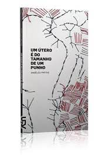

Quem é Angélica Freitas?
Angélica Freitas nasceu em Pelotas, no Rio Grande do Sul,em 8 de abril de 1973. Formou-se em jornalismo pela Universidade Federal do Rio Grande do Sul(UFRGS), residindo alguns anos em Porto Alegre. Mudou-se mais tarde para São Paulo, onde trabalhou como reporter para o jornal O Estado de S. Paulo na revista Informática Hoje. Deixou a capital paulista em 2006,iniciando uma serie de passagens e residências temporarias em países como a Holanda, a Bolivia e a Argentina. Atualmente, a poeta vive e trabalha em São Paulo, Brasil. Angelica Freitas teve poemas reunidos em livro, pela primeira vez, em uma antologia de poesia brasileira contemporânea publicada na Argentina, intitulada Cuatro poetas recientes del Brasil (Buenos Aires: Black & Vermelho, 2006), organizada e traduzida pelo poeta e critico argentino Cristian De Napoli. Nesse mesmo ano, participaria de leituras publicas de seus poemas em São Paulo, na Casa das Rosas, e no Festival de Poesia Latino-americana de Buenos Aires. Sua primeira coletanea de poemas, viria com o volume Rilke Shake (São Paulo: Cosac Naify, 2007), que integra a coleção de poesia contemporâneas "As de colete", dirigida pelo poeta carioca Carlito Azevedo. Angélica Freitas é coeditora, com os poetas Fabiano Calixto, Marilia Garcia e Ricardo Domeneck, da revista de poesia Modo de Usar & Co., para a qual traduziu poetisas hispano-americanas como Blanca Varela, Susana Thenon e Lucia Bianco. Seu trabalho ja foi ligado, por criticos como Ricardo Domeneck, a poeticas medievais como a das fatrasies, o que a liga tambem a poetas satiricos e do nonsense, como o brasileiro Sapateiro Silva,o ingles Edward Lear (1812 - 1888) e o alemao Christian Morgenstern (1871 - 1914), alem de dadaistas como Hans Arp (1886 - 1966). A critica e tradutora americana Hilary Kaplan menciona tambem, em sua introdução as traduções de poemas da autora gaucha, o paralelo entre certas praticas de Angélica Freitas, como o que esta chamaria de googlagem, e o trabalho de poetas contemporâneos dos Estados Unidos ligados ao movimento FLARF.
Poesias:
| Nome do livro | Imagem | Compra |
|---|---|---|
| Rilke Shake (São Paulo: Cosac Naify, 2007) |  |
Comprar |
| Um utero e do tamanho de um punho (São Paulo: Cosac Naify, 2013) |  | Comprar |
| Canções de atormentar (São Paulo: Companhia das Letras, 2020) | Comprar |
Antologias:
Premiações que Angélica recebeu:
Angélica Freitas e autora dos livros de poesia “Rilke Shake” (vencedor do Best Translated Book Award, nos Estados Unidos, em 2016) e “Um utero e do tamanho de um punho” (Premio APCA de poesia em 2012), bem como da graphic novel “Guadalupe”, em colaboração com o artista visual Odyr. Seus poemas apareceram em revistas como Poetry (EUA), Modern Poetry in Translation (Reino Unido), Granta (Reino Unido) e The White Review (França), e sua obra já foi publicada em Portugal, Alemanha, Espanha, Argentina e Estados Unidos. Em 2010, recebeu a Bolsa Petrobras de criação literaria com o projeto para a escrita “Um utero e do tamanho de um punho”, e, em 2011, a Jean-Jacques Rousseau Fellowship, da Academia Schloss Solitude (Stuttgart, Alemanha) para a escrita de uma performance poetica (“CancoSes de Atormentar”, realizada com a cantora Juliana Perdigao).